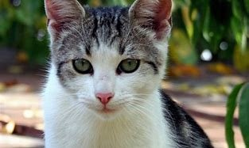

Qué es un gato y sus características
El gato, también llamado michi o minino es un mamífero carnívoro de la familia de los felinos (felidae).
Es el único felino domesticado por el hombre y junto con el perro, la mascota más popular del mundo. El nombre
científico del gato es Felis silvestris catus. Su nombre proviene del latín, «catus» que curiosamente, en la
antigua Roma hacía referencia a los gatos salvajes, mientras que los domésticos recibían el nombre de «felis».
Estos pequeños animales son excelentes cazadores, especialmente de ratones y ratas, por lo que han sido muy
útiles a la humanidad desde épocas antiguas.
Qué es un gato y sus características
Clase: mamífero
Alimentación: carnívoro
Peso: 2 a 9 kilos
Longitud: 35 a 55 cm
Esperanza de vida: 12 a 17 años
Reproducción: vivíparo
Número de crías: 2 a 10 gatitos por camada
Gestación: 58 a 62 días.
Carácter: tranquilo, sociable, cazador.
Historia,Origen y ¿Cuánto viven?
Los gatos han formado parte de la vida cotidiana de los seres humanos desde hace miles de años. Se cree que el
gato doméstico comenzó a ser un animal de compañía para el ser humano al menos desde el 7.500 a.C., por lo que
llevan más de 9.500 años a nuestro lado.
Los gatos tienen una esperanza de vida promedio de 15 años, aunque los más longevos pueden alcanzan los 17 ó 18
años. Siempre que tengan los cuidados adecuados y una buena alimentación.
 |
 |